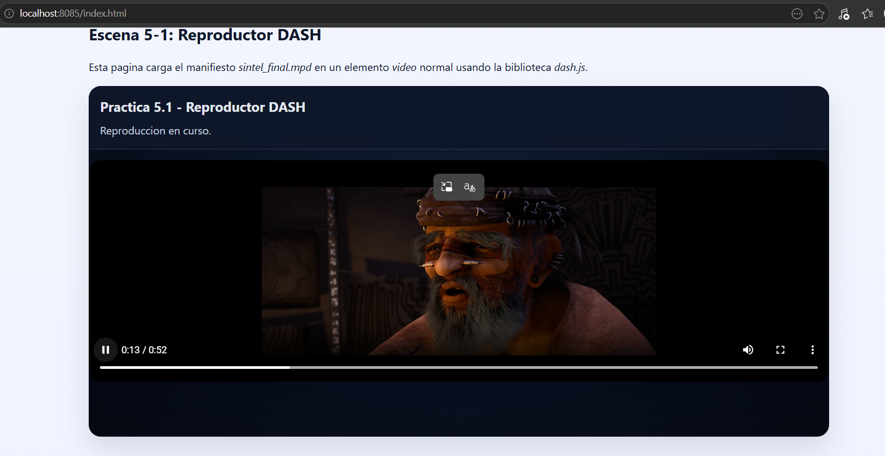
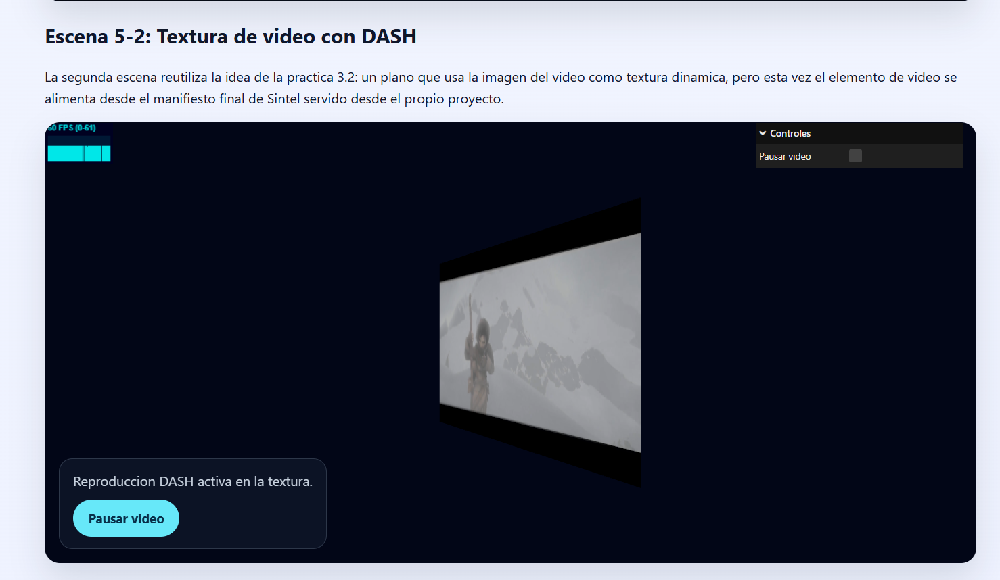

Memoria
Resumen de tareas realizadas y resultados
En esta sesion se preparo el proyecto para consumir contenido MPEG-DASH desde una maquina virtual servida por HTTP con CORS y, una vez verificado su funcionamiento, se integraron copias locales de los manifiestos y segmentos generados dentro del propio proyecto. Se dejaron listas dos escenas web: una reproduccion DASH convencional y una segunda escena donde la textura de video de la practica 3 pasa a alimentarse desde un manifiesto .mpd. La memoria recoge ademas las respuestas concisas pedidas en el guion para los dos manifiestos proporcionados y los resultados obtenidos en el ejercicio de Sintel, junto con capturas de funcionamiento por si el entorno de correccion no reproduce el MPD.
- prac5-1: reproductor DASH basico que integra dash.js en una pagina con un elemento video de identificador player.
- prac5-2: adaptacion de la practica de textura de video para usar un elemento video controlado por dash.js y alimentado por media/sintel/sintel_final.mpd.
- index.html: memoria entregable con iframes, resumen de resultados y respuestas del guion.
Dificultades surgidas y solucion
- El reproductor de referencia y las paginas propias necesitan CORS si el manifiesto se sirve desde otra maquina o puerto. Se resolvio pensando la practica para usar un servidor HTTP con --cors.
- La maquina virtual usa al menos dos redirecciones de puertos con funciones distintas: localhost:60022 -> 22 para la conexion SSH y localhost:60080 -> 8080 para acceder al servidor web que publica los manifiestos y segmentos DASH.
- Los manifiestos creados a partir de un MP4 multiplexado pueden fallar en algunos navegadores. La solucion habitual es separar audio y video y, si hace falta, recodificar el video a H.264 baseline antes de regenerar el .mpd.
- Los navegadores limitan el autoplay. Por eso las dos escenas arrancan tras una interaccion explicita del usuario.
Respuestas concisas al guion
Para cada uno de los dos manifiestos proporcionados se responden a continuacion las tres cuestiones planteadas en el guion: numero de codificaciones de audio, numero de codificaciones de video y numero de resoluciones de video disponibles.
Manifiesto 1: MultiResMPEG2.mpd
- Codificaciones de audio: El cliente puede utilizar 1 codificacion de audio distinta para adaptarse a cambios de red.
- Codificaciones de video: El cliente puede utilizar 3 codificaciones de video distintas.
- Resoluciones de video: El cliente puede usar 3 resoluciones distintas: 512x288, 768x432 y 1280x720.
Manifiesto 2: SNE_DASH_SD_CASE1A_REVISED.mpd
- Codificaciones de audio: El cliente puede utilizar 1 codificacion de audio distinta para adaptarse a cambios de red.
- Codificaciones de video: El cliente puede utilizar 4 codificaciones de video distintas.
- Resoluciones de video: El cliente puede usar 1 unica resolucion: 854x480.
Resultados del apartado 3
- La conexion de administracion de la VM se realiza por SSH usando localhost:60022 en el anfitrion, redirigido al puerto 22 del invitado.
- Para consumir los manifiestos DASH desde el navegador es necesaria una segunda regla de reenvio para HTTP, normalmente localhost:60080 en el anfitrion hacia el puerto 8080 del invitado donde se ejecuta http-server --cors.
- El manifiesto counter.mpd generado con MP4Box -dash 5000 -profile onDemand expone 1 pista de audio y 2 representaciones de video, con resoluciones 320x180 y 640x360.
- Con condiciones de red degradadas mediante tc netem, el cliente DASH reduce automaticamente el bitrate si Auto Switch esta activo.
- Al restaurar la red, el reproductor vuelve progresivamente a la mejor calidad disponible segun buffer y ancho de banda.
- En el ejercicio de Sintel, el manifiesto sintel_mux_480.mpd fallo por usar audio y video multiplexados, sintel_split_480.mpd cargo pero la imagen aparecia en negro y la solucion correcta fue recodificar el video a H.264 baseline antes de regenerar el MPD.
- El manifiesto final sintel_final.mpd ofrece 1 representacion de audio y 3 de video con resoluciones 854x480, 1280x720 y 1920x1080.
Respuestas del ejercicio Sintel
Aproximacion 1: MP4 multiplexado
Se genero sintel_mux_480.mpd directamente a partir del fichero original de 480p. El cliente de referencia no pudo reproducirlo y mostro el mensaje de error indicando que las representaciones multiplexadas no son compatibles con las guias DASH-AVC/264.
Aproximacion 2: Audio y video separados
Tras extraer las pistas a sintel_audio_480.mp4 y sintel_trailer-480p_dashinit.mp4, el manifiesto sintel_split_480.mpd llego a cargar, pero en la prueba realizada la reproduccion aparecia con audio y pantalla negra.
Aproximacion 3: Video recodificado
Recodificando el video con ffmpeg a perfil baseline se genero sintel_recoded_480_v2.mpd, que ya se reprodujo correctamente en el cliente de referencia.
Manifiesto final
Finalmente se creo sintel_final.mpd con una unica pista de audio y tres calidades de video. Este es el manifiesto utilizado por defecto en prac5-2.
- Codificaciones de audio: 1.
- Codificaciones de video: 3.
- Resoluciones de video: 854x480, 1280x720 y 1920x1080.
Dash.js
- Se descargo e integro localmente la biblioteca dash.all.min.js en la carpeta vendor.
- prac5-1.html incluye un elemento video con identificador player y crea el reproductor con dashjs.MediaPlayer().create(), reproduciendo directamente sintel_final.mpd.
- prac5-2.html parte de la idea de prac3-2.html y reemplaza la fuente MP4 por un manifiesto DASH que alimenta la textura del plano.
- Se verifico el correcto funcionamiento del manifiesto final sintel_final.mpd tanto en el reproductor normal como en la escena con textura de video.
Pasos del ejercicio 3.4
Si se desea repetir manualmente el ejercicio de Sintel sobre la maquina virtual, estos son los pasos que se siguieron para obtener el manifiesto final:
- Paso 1: descargar los tres MP4 del trailer: sintel_trailer-480p.mp4, sintel_trailer-720p.mp4 y sintel_trailer-1080p.mp4.
- Paso 2: generar sintel_mux_480.mpd directamente desde el 480p y comprobar que el reproductor de referencia rechaza la representacion multiplexada.
- Paso 3: separar audio y video del 480p con ffmpeg y crear sintel_split_480.mpd.
- Paso 4: recodificar el video del 480p a H.264 baseline con un comando equivalente a ffmpeg -i sintel_trailer-480p.mp4 -map 0:v:0 -an -c:v libx264 -profile:v baseline -pix_fmt yuv420p -r 24 -g 24 sintel_video_480_baseline.mp4.
- Paso 5: reutilizar una unica pista de audio y generar sintel_recoded_480_v2.mpd, comprobando que ya se reproduce correctamente.
- Paso 6: recodificar del mismo modo los videos de 720p y 1080p y crear el manifiesto final con MP4Box -dash 5000 -profile onDemand -out sintel_final.mpd sintel_audio.mp4 sintel_video_480_baseline.mp4 sintel_video_720_baseline.mp4 sintel_video_1080_baseline.mp4.
La entrega ya incluye el resultado final de este proceso en media/sintel/sintel_final.mpd y en sus ficheros _dashinit.mp4, por lo que no es necesario rehacer el manifiesto para corregir la practica.
Escena 5-1: Reproductor DASH
Esta pagina carga el manifiesto sintel_final.mpd en un elemento video normal usando la biblioteca dash.js.
Escena 5-2: Textura de video con DASH
La segunda escena reutiliza la idea de la practica 3.2: un plano que usa la imagen del video como textura dinamica, pero esta vez el elemento de video se alimenta desde el manifiesto final de Sintel servido desde el propio proyecto.
Capturas de pantalla
Captura de prac5-1

Captura de prac5-2
